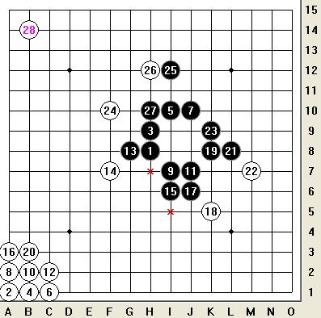

老话重提:关于一个特殊型禁手判断的疑问?
#1 老话重提:关于一个特殊型禁手判断的疑问? 作者：岑小鱼 发表时间：2011-6-16 19:49:07
=======上图对应的爱五子棋谱代码如下，以便你拆解：========
h8a1h9b1i10c1j10a2i7b2j7c2g8f7i6a3j6k5k8b3l8m7k9f10i12h12
======================================================
由于之前发在另外一个内容里面可能没几个人看见，
目前自己无法自圆其说，唯有老话重提，请教各位大侠如何判断H10的禁手问题?
请详细写出严谨的推理过程。
（注意K10这个点很不合作）
#2 Re:老话重提:关于一个特殊型禁手判断的疑问? 作者：自来水 发表时间：2011-6-16 21:11:24
H10点立下后，10路横向是活三无疑问。
H路纵向为确认是否活三，点下H7判断活四是否成立
斜线是活三，7路横向为确认是否是活三，点下K7判断活四是否成立
斜线依然活三，纵向上方K10禁手点，所以K7不是禁手，活四成立
所以7路横向是活三，所以H7禁手，H路纵向活三不成立
所以H10非禁手
［此帖子已被 自来水 在 2011-6-16 21:13:41 编辑过］
#3 Re:老话重提:关于一个特殊型禁手判断的疑问? 作者：蓝天蓝 发表时间：2011-6-16 21:59:09
路过
［此帖子已被 蓝天蓝 在 2011-6-16 22:04:32 编辑过］
#4 Re:老话重提:关于一个特殊型禁手判断的疑问? 作者：怪 发表时间：2011-6-16 22:00:57
=======上图对应的爱五子棋谱代码如下，以便你拆解：========
h8a1h9b1i10c1j10a2i7b2j7c2g8f7i6a3j6k5k8b3l8m7k9f10i12h12h10j1h7k1k7l1
======================================================
=======上图对应的爱五子棋谱代码如下，以便你拆解：========
h8a1h9b1i10c1j10a2i7b2j7c2g8f7i6a3j6k5k8b3l8m7k9f10i12h12h10h11h7h6i1g7k7
======================================================
由于k7不是禁点，所以h7是禁点，所以h10不是禁点。
这里k10在某种意义上把两个3联系到了一起，但是禁点的判断不考虑白的应手，只单纯对黑落子后的整个棋型判断。
#5 Re:Re:老话重提:关于一个特殊型禁手判断的疑问? 作者：岑小鱼 发表时间：2011-6-17 18:47:24
引用：
原文由 自来水 发表于 2011-6-16 21:11:24 :H10点立下后，10路横向是活三无疑问。
H路纵向为确认是否活三，点下H7判断活四是否成立
斜线是活三，7路横向为确认是否是活三，点下K7判断活四是否成立
斜线依然活三，纵向上方K10禁手点，所以K7不是禁手，活四成立
所以7路横向是活三，所以H7禁手，H路纵向活三不成立
所以H10非禁手
［此帖子已被 自来水 在 2011-6-16 21:13:41 编辑过］
请看加了颜色的地方。K10既然是禁点，10路横向的活三无法成为活四了吧。。这就是矛盾的地方。如何解释这个问题？
4楼推理过程中K7的状态是如何判断的？ 是否必须依靠K10的状态 ?
#6 Re:老话重提:关于一个特殊型禁手判断的疑问? 作者：自来水 发表时间：2011-6-17 19:39:03
活三的定义是下一手能形成活四的三，10路下一首直接活四
=======上图对应的爱五子棋谱代码如下，以便你拆解：========
h8a1h9b1i10c1j10a2i7b2j7c2g8f7i6a3j6k5k8b3l8m7k9f10i12h12h10o1k10
======================================================
此时活四是成立的。并没有出现禁手的情况，注意此时下方并没有落子
所谓的K10禁手是在中间过程中产生的（也就是放下3个子以后，禁手出现）
而那几个子不落下，也就是初始情况下，就不是禁手。活三也是成立的
#7 Re:老话重提:关于一个特殊型禁手判断的疑问? 作者：岑小鱼 发表时间：2011-6-17 19:43:20
竖线的禁手判断通过一系列的假设.....这些假设都是目前不存在的，是未来才会出现的，
单独看目前，竖线的活三一样可以走成活四吧??
既然竖线可以看未来，横线为何不能看未来。
#8 Re:老话重提:关于一个特殊型禁手判断的疑问? 作者：自来水 发表时间：2011-6-17 19:44:31
=======上图对应的爱五子棋谱代码如下，以便你拆解：========
h8h9i8h10j10k10h7f6i7
======================================================
再举个例子说明下你的问题，图中横向两个活三，活了一个以后另一个就是禁手
但是现在两个都不是禁手，因为那两个子没一个落下的。
分清楚思维层次应该就不会再混乱了
#9 Re:老话重提:关于一个特殊型禁手判断的疑问? 作者：自来水 发表时间：2011-6-17 19:48:48
你不能把判断纵向的中间结论用在横向上，因为那个点的禁手不是永久性的
横向活四以后不需要再判断什么禁手了
［此帖子已被 自来水 在 2011-6-17 19:51:34 编辑过］
#10 Re:老话重提:关于一个特殊型禁手判断的疑问? 作者：自来水 发表时间：2011-6-17 20:00:24
=======上图对应的爱五子棋谱代码如下，以便你拆解：========
h8o2h9o3g10o4f10o5e9o6e8o7f7o8g7
======================================================
这个应该最和你的相似了吧，就说你一次判断一路，判断完了以后，因为那些子拔去了，后面中间的什么结论都要抛弃，只留下当前一路是否是活三（或者活四）的结论，再判断另一路。不要受前一次判断的任何影响
#11 Re:Re:老话重提:关于一个特殊型禁手判断的疑问? 作者：岑小鱼 发表时间：2011-6-17 20:11:16

每次打谱都要重新搞一次....烦恼.干脆直接上图
如图。黑27落子，按前面的分析，首先认为K10不是禁手而10线可以成为活四。
然后，又利用K10是4X4禁手来推导K7不是禁，再推导H7是禁。最后得出H10不是禁的结论.....
请问 K10这个假设点怎么能同时存在两种状态呢?
8楼的情况目前这手不三，没有可比性吧.
#12 Re:老话重提:关于一个特殊型禁手判断的疑问? 作者：岑小鱼 发表时间：2011-6-17 20:14:58
回：前面回复中的中间结论的观点的。
具体到这个型，当你推理到K10这个是禁的时候已经利用了10线横线这个三。就是说也影响了这个三。
#13 Re:Re:老话重提:关于一个特殊型禁手判断的疑问? 作者：岑小鱼 发表时间：2011-6-17 20:19:05
引用：
原文由 自来水 发表于 2011-6-17 20:00:24 :
=======上图对应的爱五子棋谱代码如下，以便你拆解：========
h8o2h9o3g10o4f10o5e9o6e8o7f7o8g7
======================================================这个应该最和你的相似了吧，就说你一次判断一路，判断完了以后，因为那些子拔去了，后面中间的什么结论都要抛弃，只留下当前一路是否是活三（或者活四）的结论，再判断另一路。不要受前一次判断的任何影响
这个性状具体想说哪个点？如果是拐角点那没有可比性，因为显然黑两个三都可以往外面活四。
#14 Re:Re:老话重提:关于一个特殊型禁手判断的疑问? 作者：岑小鱼 发表时间：2011-6-17 20:25:22
引用：
原文由 自来水 发表于 2011-6-17 19:48:48 :你不能把判断纵向的中间结论用在横向上，因为那个点的禁手不是永久性的
横向活四以后不需要再判断什么禁手了
［此帖子已被 自来水 在 2011-6-17 19:51:34 编辑过］
这个请看前面回复，当你判断到了K10是禁的时候，就影响了10线横三.
#15 Re:老话重提:关于一个特殊型禁手判断的疑问? 作者：自来水 发表时间：2011-6-18 12:28:14
11楼已经没问题了
K10这个点的禁手状态就是受了下方虚拟子的影响。
初始状态不是禁手，下方虚拟子摆上后就是禁手。
13楼当然是中间四个点
14楼，已经说过了，K10禁手是基于摆上虚拟子的前提，拔去后它真不是禁手。
纵向要绕一圈是因为搞不清左边的活三是否成立，和横向真的完全扯不上。。。你判断横向的时候不需要再向下走，判断出活三后可以用在后面判断四四禁手上，但后面的四四禁手不能反过来限制这个3，这就是个次序上的问题。
［ 岑小鱼 于 2011-6-18 16:36:46 时花20金币送鲜花一朵］
#16 Re:老话重提:关于一个特殊型禁手判断的疑问? 作者：岑小鱼 发表时间：2011-6-18 16:36:31
你这个方式，我理解为:横向是发生在现在，就算是K10活四，发生时间“1”（或许是一手）之后。
而竖线的判断到了K10是时间“3”（或许叫3手）之后。他们不是具备同时性,是错开的。就是说K10这两个状态不是同一个时间发生的。同时性的错觉只是因为-----是在这个时刻思考的。。。
这样似乎比较合理解释这个问题。但依然不够完美。。。我再找找思路。
#17 Re:老话重提:关于一个特殊型禁手判断的疑问? 作者：自来水 发表时间：2011-6-18 17:19:15

#18 Re:老话重提:关于一个特殊型禁手判断的疑问? 作者：高飞 发表时间：2011-6-18 18:00:26
 我从不判断那么复杂的禁手 最多就多一个关系~~
我从不判断那么复杂的禁手 最多就多一个关系~~
太多的 也下不出来
#19 Re:老话重提:关于一个特殊型禁手判断的疑问? 作者：海月 发表时间：2011-6-18 18:56:18
双三禁手的定义应该是黑棋落下双三点后白棋无论挡哪个三黑棋另一个三下一手都可以直接活四，就是说一定是有白棋挡的，上面两人讨论的图似乎都没这么考虑，上图中当黑棋落完H10后，白棋假如挡在H11,H7,H6，黑棋都可以在K10活四，但白棋挡在G10 K10 L10，H7都是绝对禁手，因此H10是假禁手点［此帖子已被 海月 在 2011-6-18 19:00:02 编辑过］
#20 Re:老话重提:关于一个特殊型禁手判断的疑问? 作者：岑小鱼 发表时间：2011-6-18 18:56:44
那是....实战中3层的都没见过.#21 Re:老话重提:关于一个特殊型禁手判断的疑问? 作者：自来水 发表时间：2011-6-19 11:40:52
三三禁手只要证明：一字落下关于该点形成两个活三
再根据活三的定义：下一手能形成活四，就能判断
不需要白棋也能进行
［此帖子已被 自来水 在 2011-6-19 11:42:17 编辑过］